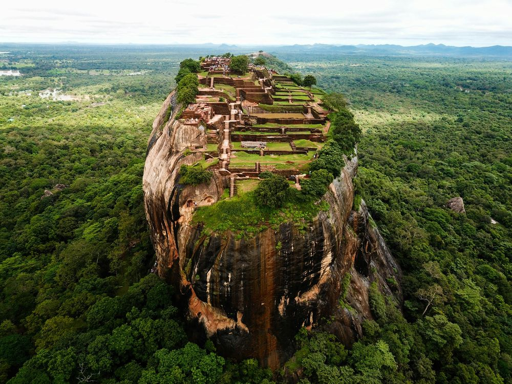
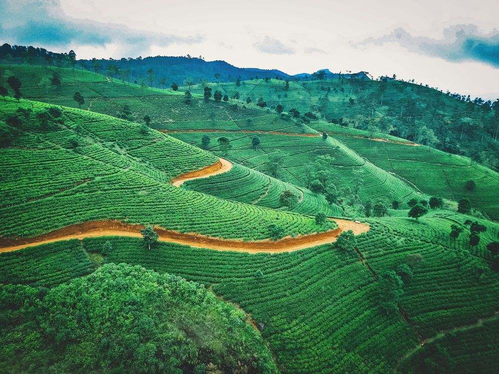
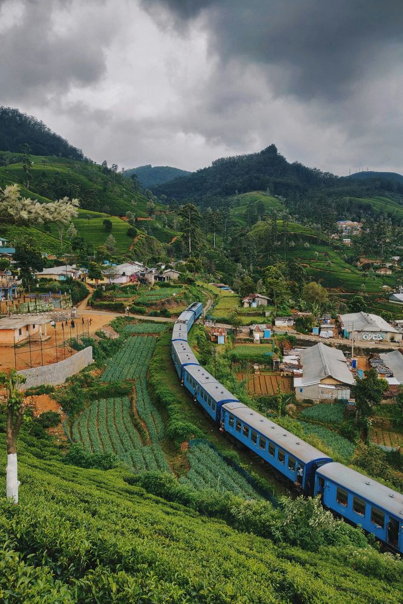

A1 — Heritage & Culture
Chronicles of Heritage
& Emerald Peaks
From the roots of ancient kingdoms to the heights of the misty hills
The quintessential Sri Lanka journey, flowing from the island's most ancient civilisations to its mist-covered highlands and colonial-era coast. Designed for families and first-time visitors, this route traces the full arc of the island's story — from UNESCO-listed stupas and a legendary rock fortress to a world-famous scenic train ride, a colonial harbour fort, and a vibrant capital city — all at a pace that lets every place breathe.
Eight Stops, Seven Days
Anuradhapura
Ancient Capitals
Explore the sprawling ruins and towering stupas of the island's first capital — a testament to ancient spiritual and architectural grandeur written in stone and silence.
Habarana
Village Life & Wild Elephants
Immerse yourself in authentic village life and witness wild elephant herds in their natural habitat at the edge of the lake — unhurried, unscripted, and unforgettable.
Sigiriya
The Lion Rock
Scale the legendary “Lion Rock” to witness 5th-century frescoes and world-class urban planning set against a 360-degree jungle canopy that still astonishes 1,500 years on.
Kandy
Sacred Hill Capital
Visit the sacred Temple of the Tooth in this UNESCO-listed hill capital — the final stronghold of the independent Kandyan kings and a cultural heartbeat that never stopped.
Nuwara Eliya
One of the World's Great Train Rides
Embark on one of the world's most iconic train journeys, winding through misty peaks and deep valleys into the heart of the highlands — where the air smells of eucalyptus and Ceylon tea.
Ella — Nine Arches Bridge
Mountain Town & Hidden Arches
Marvel at a colonial-era engineering masterpiece standing hidden among lush tea bushes and tropical forests, then soak in the unhurried spirit that makes travellers linger longer than planned.
Galle Fort
The Living Fortress
Wander through the narrow cobblestone streets of the only “living fortress” in the country, where history and modern artisan boutiques collide inside the same UNESCO-listed walls.
Colombo
City Finale
Conclude with a sensory tour of the capital — from the vibrant Red Mosque to high tea in the historic Dutch Hospital precinct — a fitting last chapter for the island's richest story.
The full day-by-day itinerary — including stays, activities and pace — is shared exclusively upon enquiry.
Request the Full Itinerary

